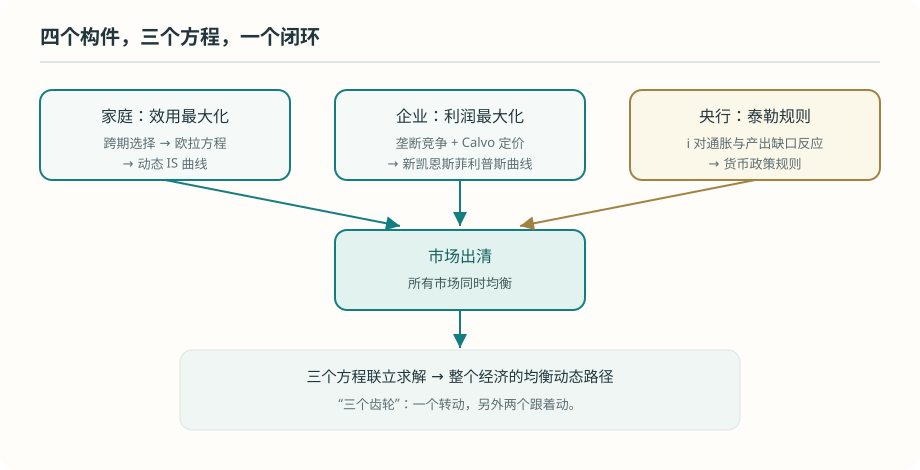
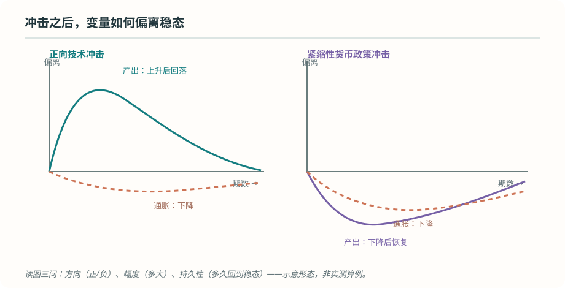

DSGE 模型与现代方法
前一章讲预期，再前一章讲周期。这一章把它们汇到一起，看现代宏观经济学的主导范式——动态随机一般均衡（DSGE）模型：它从家庭与企业的优化出发，用少数几个方程描述整条动态路径，也是央行与财政部门的分析工具。
为什么宏观需要“微观基础”
前面的 IS-LM 模型有两条曲线：IS 代表产品市场均衡，LM 代表货币市场均衡。它简洁、直观，但有一个根本问题：它不是从个体决策推导出来的。为什么利率越低投资越多？为什么收入越高货币需求越多？这些“行为方程”是直接假设的，而不是从家庭与企业的优化推出来的。
卢卡斯批判（1976）指出：没有微观基础的模型，在政策环境变化时会失效，因为其中的参数不是自然常数，而是受政策影响的人为反应结果。这推动了方法论转向：建模必须“从底层做起”——从家庭的效用函数、企业的生产函数出发，推导最优决策，再加总到整个经济。DSGE 就是这一转向的产物。
| 维度 | IS-LM | DSGE |
|---|---|---|
| 微观基础 | 无——行为方程直接假设 | 从效用最大化与利润最大化推导 |
| 预期 | 简单外推或忽略 | 前瞻性（理性预期）或学习预期 |
| 动态 | 静态或比较静态 | 跨期优化，完整动态路径 |
| 随机性 | 确定性冲击分析 | 随机冲击驱动波动 |
| 一般均衡 | 部分市场均衡 | 所有市场同时出清 |
| 政策评估 | 约化形式参数估计 | 结构参数不受政策变化影响 |
新凯恩斯 DSGE 的四个构件
目前学术界与央行使用最广的框架是新凯恩斯 DSGE（NK-DSGE）：它是 RBC（强调微观基础与一般均衡）与新凯恩斯主义（强调价格黏性与市场摩擦）的融合体，由四个核心构件组成。
- 家庭：在预算约束下选择消费、劳动供给与储蓄，最大化一生效用。由此导出两个关键方程：欧拉方程（消费的跨期配置）与劳动供给方程。
- 企业：在约束下选择价格与产量，但处于垄断竞争环境，并面临价格调整成本（Calvo 定价：每期只有一部分企业能调价）。正是这个设定引入了“价格黏性”，使货币政策能影响实际经济。
- 央行：遵循明确的利率规则响应通胀与产出缺口。最经典的是泰勒规则，它“封闭”了模型，决定货币政策如何对冲击做出反应。
- 市场出清：所有市场（产品、劳动、债券）同时均衡，令模型逻辑自洽。

三个核心方程
线性化后的标准 NK-DSGE 可以写成三个方程（x 为产出缺口，i 为名义利率，π 为通胀，rn 为自然利率）：
三类冲击与脉冲响应
DSGE 的核心用途不是描述稳态，而是分析冲击发生后经济如何动态调整。标准 NK-DSGE 通常包含三类冲击：技术冲击（来自 RBC）、偏好冲击（消费者耐心程度变化）、货币政策冲击（泰勒规则之外的意料之外加息或降息）。
模型对冲击的响应用脉冲响应函数（IRF）展示：给定一个标准差大小的冲击，关键变量在未来若干期如何偏离稳态。读 IRF 要抓住三个维度：方向、幅度、持久性。

| 冲击类型 | 产出 | 通胀 | 利率 |
|---|---|---|---|
| 正向技术冲击 | 上升（较持久） | 下降 | 下降（央行应对低通胀） |
| 负向偏好冲击 | 下降（暂时） | 下降 | 下降（央行宽松应对） |
| 紧缩性货币政策冲击 | 下降（暂时） | 下降 | 先升后降 |
演算：泰勒规则与“泰勒原则”
用 i = r* + π* + φπ(π − π*) + φx·x 计算名义政策利率，并检验 φπ 是否大于 1。取 r*=π*=2%。所有数值为构造演算，不对应任何真实央行的实际规则。
DSGE 的前沿与争议
DSGE 并非没有批评者。2008 年全球金融危机后，它受到猛烈批评——其中一个著名问题是“为什么经济学家没有预测到这场危机？”。批评集中在几点：
- “代表性主体”的简化：标准 DSGE 假设一个代表性家庭，等于把所有人平均成一个典型个人。但高收入者与低收入者、贷款人与储蓄者的行为差异很大，平均会掩盖重要信息。
- 金融部门的缺失：危机前很多模型几乎不包含金融中介，银行只是“面纱”，因而看不到金融加速器、信贷冻结等现象。
- 线性近似的局限：标准求解在稳态附近做线性化，对小冲击尚可，对 2008 年级别的大冲击可能超出有效范围。
- 预测能力存疑：模型在解释历史数据上表现不错，但真实预测有时不如更简单的 VAR 模型。
| 方向 | 解决的问题 | 代表文献 |
|---|---|---|
| 异质性代理人新凯恩斯（HANK） | 引入异质性家庭，研究分配与宏观政策的互动 | Kaplan, Moll & Violante (2018) |
| 金融摩擦 DSGE | 包含银行、金融加速器与信贷约束 | Gertler & Karadi (2011) |
| 非线性 DSGE | 用全局方法求解，不再依赖线性近似 | Fernández-Villaverde 等 |
| 气候 DSGE | 将气候变化与碳税纳入一般均衡 | Nordhaus 等 |
除了理论细节，这章更想传递的是一种方法：从第一性原理出发构建分析框架，用方程把机制写清楚，再用数据检验它，同时记得它只是地图。
来源与阅读
本章的方程形式与前沿方向均给出出处；交互图表中的数值为构造示例，不对应任何真实央行的实际规则。
- Kydland, F. & Prescott, E. (1982). Time to Build and Aggregate Fluctuations. Econometrica（RBC 基准）
- Lucas, R. (1976). Econometric Policy Evaluation: A Critique（微观基础转向的起点）
- Taylor, J. (1993). Discretion versus Policy Rules in Practice（泰勒规则）
- Kaplan, Moll & Violante (2018). Monetary Policy According to HANK. AER
- Gertler, M. & Karadi, P. (2011). A Model of Unconventional Monetary Policy. JME
- Dynare · 求解、模拟与估计 DSGE 模型的开源软件